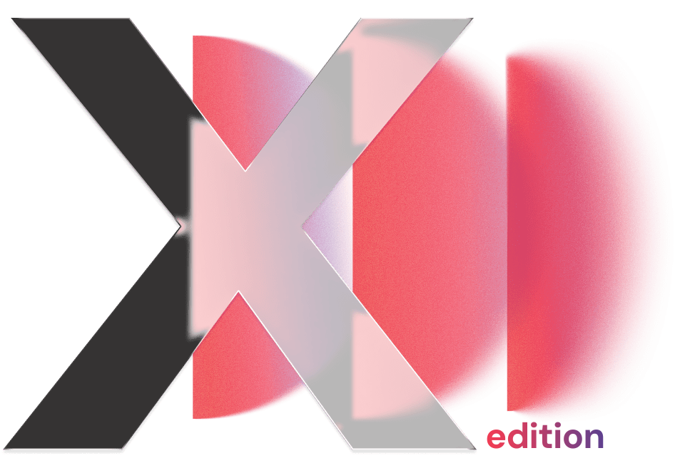
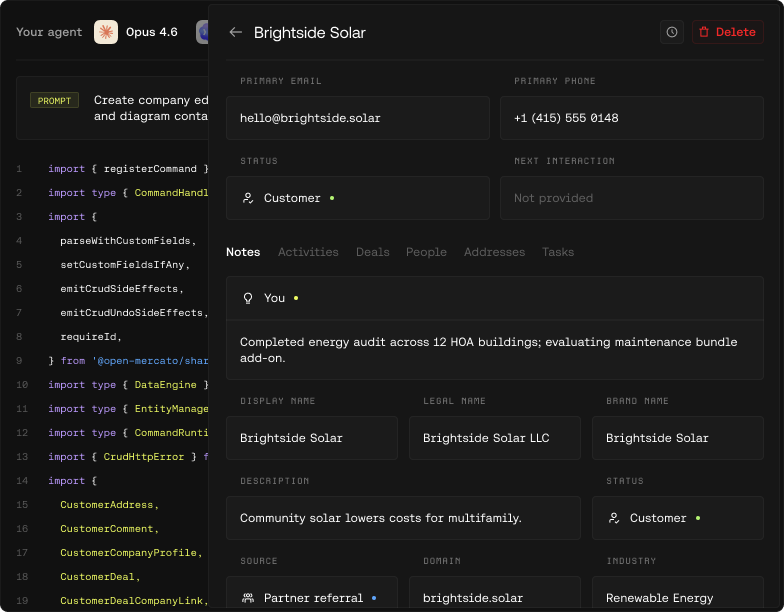
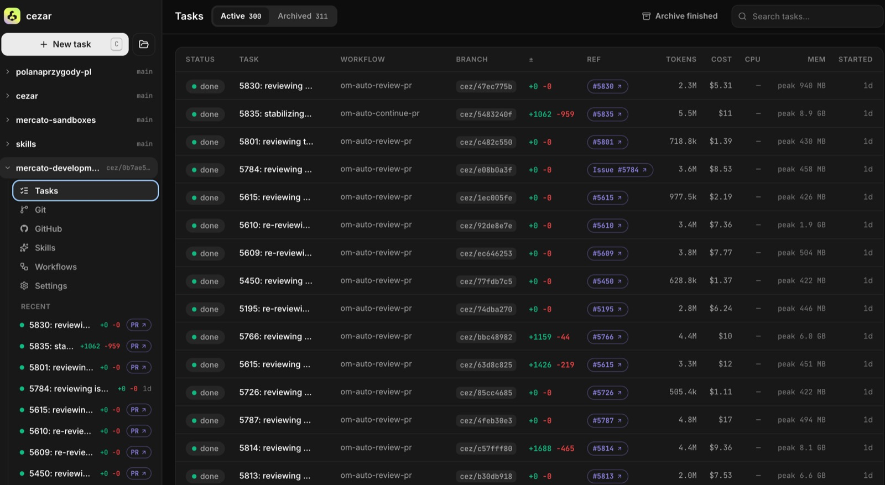
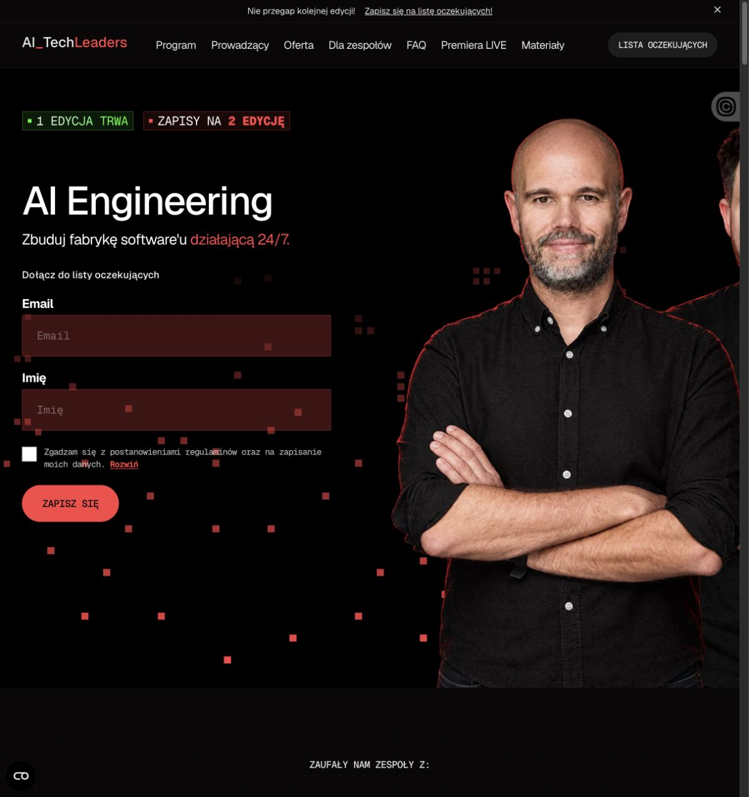

Adapt. Lead. Repeat.
Freeware and software on CDs.
Websites and eCommerce.
Companies.
Piotr Karwatka
Zajączek HTML editor + 20 other programs
Blogfrog.pl, Znam.to
PLN 260M valuation at exit
PLN 500M valuation at exit
Investor in 30 companies, including ElevenLabs
27 October 2026
Many of us were here because we loved technology and making things.
MY FIRST DEVELOPER JOB / 2006
And I was incredibly happy.
The version of IT we knew over the last 10 years is changing.
A lot of people feel disappointed.
You used to earn a lot as a developer.
In many areas, the technology itself is losing value.
I can’t remember the last time I saw so many possibilities for building things.
I invest less, even as more opportunities come my way.
Now is a good time to build.
AI engineering makes it possible.
That’s how I started Open Mercato.
I learned a huge amount along the way.

You can build much longer before you need an investor.
Fundraising without a working MVP?
Hard to take seriously.
What people need.
| Local unicorns | VC-backed frontier AI |
|---|---|
Poland is a large market. Costs are low. YOUR MOAT Go-to-market, sales and integrations. Time works in your favor. |
Technology at the Very hard to build. |
Another Viktor or Grok bot?
Very hard to win. Enormous competition.
Dev tools

The tool we built to coordinate coding agents.

The program built from our AI engineering practice.
Our Open Mercato experience, turned into products we use ourselves.
Services that solve concrete business problems
Capabilities AI can call to get useful work done.
Connections to the systems a business already runs.
A specific business need gives the infrastructure its value.
Deep business knowledge, built into the product.
That knowledge becomes your moat.
Hard for competitors to replicate.
Work many teams don’t want to take on.
Models that struggled when technology was expensive may become viable.
COMMERCIAL MODEL
DELIVERY APPROACH
An opportunity to turn a new cost structure to your advantage.
Business models are changing
faster than ever.
One design partner.
Popularity driven by hype.
Other teams will probably
be here soon.
WHERE TO LOOK
Two startups in a similar category. Similar time to $4M ARR.
| Startup A | Startup B |
|---|---|
$4M ARR $40MCapital burned |
$4M ARR $4MCapital burned |
The VC pressure to “break things and go fast”
doesn’t always produce a better result.
Viral marketing.
A very cool startup.
A large funding round.
Two years later
A pivot.
Back to square one.
Looking for an entirely new direction.
Getting a customer to pay is harder than getting a VC to invest in an overheated market.
And something you can keep doing
long enough to stay in the game.
Startups die when the founder gives up.
Enough room to survive.
Enough income to meet your needs :)
Building a company worth 100 million
is a pretty good idea.
You make wiser decisions.
You watch costs more closely.
You understand customers better.
You hire more thoughtfully.
The journey teaches you.
Someone who feels the problem and can help the team reach users.
One workflow, explicit boundaries and the access needed to test it.
An observable result and a date for deciding what follows.
What could a customer use next week?
Piotr Karwatka
Open Mercato & Catch the Tornado